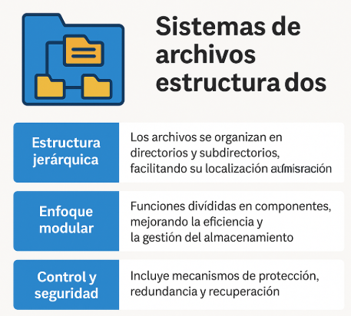

Su misión consiste en definir cómo se almacenan y gestionan los datos, lo que facilita las tareas de búsqueda, acceso y administración de archivos.
Una ventaja que se tiene es que presentan una arquitectura modular la cual ayuda a resolver todas las operaciones complejas en los componentes que así lo requieran.
Los sistemas de archivos se integran en procedimientos con mayor seguridad los cuales su función principal es proteger la información a perdidas en fallos del sistema operativo.

Figura 36. Sistemas de archivos estructurados en el sistema operativo. Adaptado de Sistemas operativos modernos (4.ª ed.) por Andrew S. Tanenbaum y Herbert Bos, 2015; Pearson Educación.